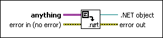

To .NET Object VI
Owning Palette: .NET Functions
Requires: Base Development System (Windows)
Converts a LabVIEW data type to a .NET object. You can convert numeric (except extended precision and complex), string, Boolean, timestamp, path, .NET refnum, and array data types.

 Add to the block diagram Add to the block diagram |
 Find on the palette Find on the palette |